STRESS, STRAIN AND DISPLACEMENT RELATIONSHIPS FOR OPEN AND CLOSED SINGLE CELL THIN WALLED BEAMS
Assumptions:
1) Axial constraint effects are negligible
2) Shear stresses normal to surface can be neglected
3) Direct and shear stresses on planes normal to surface are constant across thickness
4) Beams have uniform section, with skin thickness varying around the section but constant
along length of the beam
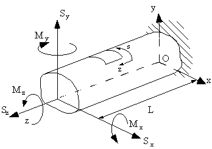 |
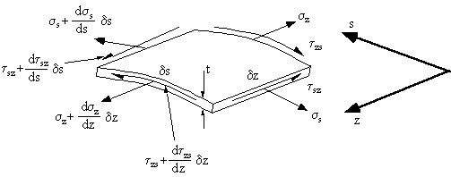 |
Figure 23: Loaded beam structure. |
Figure 24: General stress system on element of closed or open beam section. |
These shear and direct stresses are produced by the bending moments, shear loads and internal pressures. Although 't' can vary with 's' for each element of length δs, we can assume that this length is small enough to make 't' constant over this length.
From Elasticity we have that:
$$ τ_{sz} = τ_{zs} = τ $$Instead of using shear stress, the analysis will become easier if we introduce the term Shear Flow $ q = τ t$, which is the shear force per unit length rather than shear stress.
Shear flow is defined positive if it is in the same direction as increasing 's'.
What we are attempting to determine in this analysis are two things, firstly a relationship between the shear and direct stresses, and secondly a relationship between shear strain and the deformation of this element. So we may then use these relationships to determine a shear flow equation and an angle of twist equation.
We now replace the shear stress values in the element with those of shear flow:
|
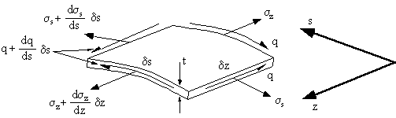 |
|
Figure 25: Element showing the direct stresses and shear flow. |
Using equilibrium about the z-axis and neglecting body forces gives:
$$Σ F_z = ( σ_z + {∂σ_z}/{∂z} δz)t δs - σ_z t δs +( q + {∂ q}/{∂s} δs) δz - q δz = 0 $$
Dividing by δz and in the limit as δz → 0 , it simplifies to:
$${∂q}/{∂s} + t {∂ σ_z} /{∂z} = 0 $$and using equilibrium about the 's' direction, then,
$${∂q}/{∂z} + t {∂ σ_s} /{∂s} = 0 $$We now need to look at strain relationships. Starting by defining the three components of displacement at a point on the tube wall.
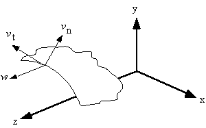 |
Figure 26: Axial, tangential and normal components of displacement of a point in beam wall. |
Where :
w = displacement in the z axis
vt = tangential displacement, positive with increasing 's'
vn = normal displacement, positive outwards
From Elasticity :
$$ε_z = {∂w}/{∂z}$$To define Shear strain look at how the element is distorted by shear:
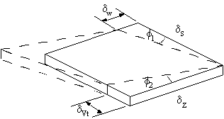 |
Figure 27: Element distorted due to shear. |
Shear strain is then defined as the addition of the two angles of rotation of the sides, such that:
$$ γ = φ_1 + φ_2 $$ where in the limits as the element size goes to zero: $$ γ = {∂w}/{∂s} + {∂v_t}/{∂ z} $$It is now necessary to define the term vt as a function of displacements u and v ( in x and y axis) and angle of twist of the section θ. In order to do this it is necessary to assume that the ribs are able to hold the cross section rigidly enough so that when it twists it holds its cross sectional shape. However the ribs have no strength in a plane normal to them, allowing the section to warp or deform in the z axis.
Define
Ψ = Angle between the tangent to the surface of the beam's cross section and the x-axis.
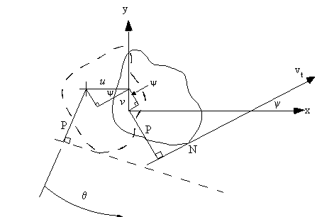 |
Figure 28: Beam cross section rotated by angle θ, showing the rotation of the normal to surface. |
Tangential displacement at any point N on the tube is :
$$v_t = pθ + u cos (ψ) + v sin(ψ) $$Relating these displacements about a point R, which is the centre of twist gives:
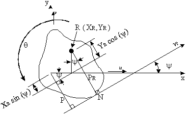 |
Figure 29: Rotation of beam section about centre of twist |
the displacement vt is
$$v_t = p_R θ $$and
$$p_R = p - x_R sin(ψ) + y_R cos(&psi); $$which when combined give:
$$v_t = p θ - x_R θ sin(ψ) + y_R θ cos(ψ) $$These two equations which describe the tangential displacement of the tube. In order to determine the second term of the equation for γ it is necessary to differentiate the equations for vt with respect to z.
$$ {∂ v_t}/{∂z} = p {dθ}/{dz} + {du}/{dz} cos(&psi) + {dv}/{dz} sin(&psi) $$and
$$ {∂ v_t}/{∂z} = p {dθ}/{dz} - x_R sin(ψ) {dθ}/{dz} + y_R cos(ψ) {dθ}/{dz} $$These two equations represent the same value, therefore the centre of rotation is:
$$ x_R = -{({dv}/{dz})}/{({dθ}/{dz})} \text" , " y_R = {({du}/{dz})}/{({dθ}/{dz})} $$These equations will be used to determine the shear stress distribution in a thin walled open or closed tube, as well as the displacement, warping and angle of twist of the section due to these shear loads.
SHEAR FLOW IN BEAMS WITH OPEN SECTIONS
Look at a beam with an open section, with applied shear forces Sx and Sy about a point which
produces no twisting of the tube cross section (Shear Centre).
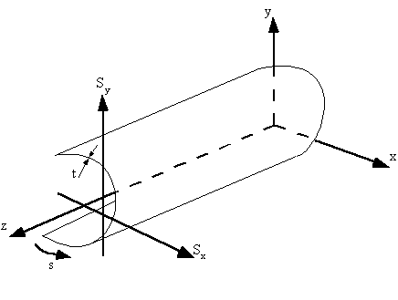 |
Figure 30: Open beam section loaded with two shear loads (Sy and Sx) |
The relationship between shear flow and axial stress is given by : $${∂q}/{∂s} + t {∂ σ_z} /{∂z} = 0 $$
and the equation for direct stress is given by equation : $$ σ_x = {M↖{-}_x}/{I_{xx}} y + {M↖{-}_y}/{I_{yy}} x $$
differentiating this equation gives:
$$ {∂σ_x}/{∂z} = {∂M↖{-}_x}/{∂z} y/{I_{xx}} + {∂ M↖{-}_y}/{∂z} x/{I_{yy}} $$substituting back into the first equation gives:
$$ {∂q}/{∂s} = - {∂M↖{-}_x}/{∂z} {ty}/{I_{xx}} + {∂ M↖{-}_y}/{∂z} {tx}/{I_{yy}} $$
substituting for the effective shear forces gives:
$$ {∂q}/{∂s} = - {S↖{-}_y}/{I_{xx}} ty - {S↖{-}_x}/{I_{yy}} tx $$Integrating this equation wrt 's' from one point to another along the beam surface gives:
$$ q_2 - q_1 = ∫^2_1 {∂q}/{∂s}.ds = - {S↖{-}_y}/{I_{xx}} ∫_1^2 ty.ds - {S↖{-}_x}/{I_{yy}} ∫_1^2 tx.ds $$But by starting at s = 0 where q = 0 for an open beam, then:
$$ q_s = - {S↖{-}_y}/{I_{xx}} ∫_0^s ty.ds - {S↖{-}_x}/{I_{yy}} ∫_0^s tx.ds $$Example:
Determine the shear flow distribution in the thin walled channel section loaded by a single vertical force applied through the shear centre.
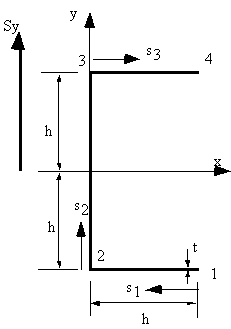 |
Figure 31: Channel section loaded vertically through shear centre. |
Since the applied vertical load passes through the shear centre, there is no torque applied to the beam, so shear flow equation applies.
Since only Sy is applied, then: $$ S↖{-}_y = {S_y}/{1 - {I_{xy}}^2/{I_{xx}I_{yy}}} \text" , " S↖{-}_x = {- S_y {I_{xy}}/{I_{xx}}/{1 - {I_{xy}}^2/{I_{xx} I_{yy}}} $$Where :
$$ I_{xx} = 8/3 h^3 t \text" , " I_{yy}= 5/{12} h^3 t \text" , " I_{xy} = 0 $$Which gives that
$$ S↖{-}_y = S_y \text" , " S↖{-}_x = 0 $$So shear flow equation becomes:
$$ q_s = - {S_y}/{I_xx} ∫_0^s ty. ds $$On the bottom flange 1 --> 2, at s1 = 0, y = -h and at s1 = h, y = -h which by using the equation of a line y = ms1 + b gives that: y = -h, where 0 < s1 < h so the shear flow between points 1 and 2 is:
$$ q_{12} = {3 S_y}/{8h^3t} ∫_0^{s_1} ht. ds_1 $$giving:
$$ q_{12} = {3 S_y}/{8h^2} s_1 $$Now at s1 = 0, q12 = 0, at s1 = h, q2 = 3Sy / 8h, and from the above it can be seen that we have a linear increasing shear flow.
On the web 2-->3, at s2 = 0 , y = -h and at s2 = 2h, y = h which by using the equation of a line y = ms2 + b gives that y = - h + s2, where 0 < s2 < 2h , but at point 2 the shear flow is not 0 so: $$ q_{23} = {3 S_y}/{8h^3t} ∫_0^{s_2} t(h -s_2).ds_2 + q_2 $$giving:
$$ q_{23} = {3 S_y}/{8h^3} (h^2 + hs_2 - {s_2^2}/2) $$Which has the form of a parabola symmetrical about the x-axis, with the maximum value of shear flow at s2 = h, of q23 = 9Sy / 16h, and at s2 = 2h, q3 = 3Sy / 8h.
On the top flange 34, at s3 = 0, y = h and at s3 = h, y = h which by using the equation of a line y = ms3 + b gives that y = h, where 0 < s3 < h so the shear flow between points 3 and 4 is:
$$ q_{34} = - {3 S_y}/{8h^3t} ∫_0^{s_3} ht.ds_3 + q_3 $$giving:
$$ q_{34} = {3 S_y}/{8h^2} (h - s_3) $$And at s3 = h , q4 = 0, which is a linearly decreasing shear flow.
The shear flow distribution looks like this:
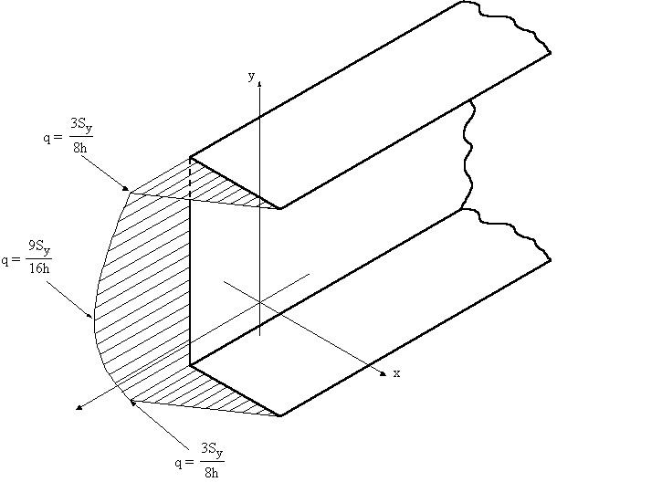 |
Figure 32: Shear flow distribution on channel section |
SHEAR CENTRE OF OPEN BEAM SECTION
The shear centre is that point in the cross section through which the shear loads produce no twisting. It is also the centre of twist when torsional loads are applied. As a rule, if a cross-section has an axis of symmetry, then the shear centre must lie on that axis and in cruciform or angle sections, the shear centre is located at the intersections. It is important to define the position of the shear centre because although most wings are not loaded at this point, if we know its location, we can represent the shear loads applied as combinations of shear loads through the shear centre and a torque.
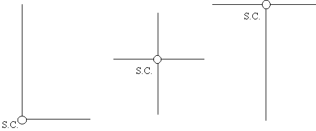 |
Figure 33: Shear centre locations for some typical open beam sections. |
To calculate the shear centre, determine the moment generated by the shear flow about an appropriate point in the cross section. This moment is equal to the moment generated by the applied shear force about this same point.
$$ Σ M_{applied} = Σ M_{shear flow} $$Example :
For the open beam section of the previous example, determine the position of the shear centre.
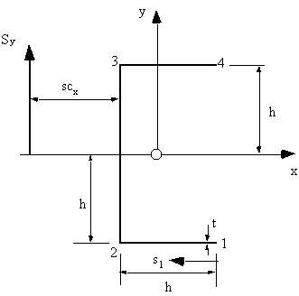 |
Figure 34: Channel section with load through shear centre. |
Because shape is symmetrical the shear centre must lie on the x-axis, a distance scx from the web.
The steps in determining the shear centre are as follows:
1) Determine the equations which describe the shear flow in the cross section.
These were found to be:
$$ q_{12} = {3 S_y}/{8h^2} s_1 $$ $$ q_{23} = {3 S_y}/{8h^3} (h^2 + hs_2 - {s_2^2}/2) $$ $$ q_{34} = {3 S_y}/{8h^2} (h - s_3) $$2) Find an appropriate point in the cross section and take moments about it. In this case
point 3. This eliminates the moments caused by the shear flow in the web 23 and flange 34.
The moment equation is:
$$ S_y sc_x = ∫_0^h q_{12} 2h .ds_1 $$substituting the equation for q12 defined previously, gives:
$$ S_y sc_x = 2h {3 S_y}/{8h^2} ∫_0^h s_1. ds_1 = 3/4 S_y/h ( S_i^2 /2 ) = 3/8 h S_y $$which gives:
$$ sc_x = 3/8 h $$Note: In the case of unsymmetrical sections, the coordinates (scx, scy) of the shear centre have to be found. This is best achieved by first applying a vertical shear force Sy, determining scx, then applying a horizontal force Sx determining scy.
SHEAR FLOW OF CLOSED TUBES
This solution is similar to that for an open beam section but with 2 differences:
1) Shear loads may be applied through any point in cross section;
2) At origin of 's', the value of shear flow qs,0 is unknown
Look at arbitrary closed beam, with applied shear forces Sx and Sy
|
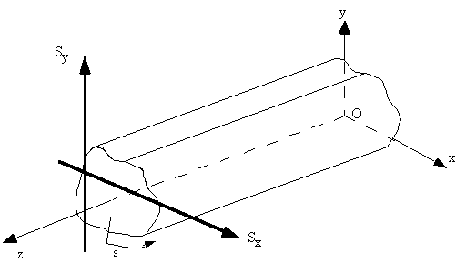 |
|
Figure 35: Closed beam section with two shear loads (Sy and Sx) |
If hoop stresses and body forces are absent, it is necessary to use shear flow equation as:
$$ {∂q}/{∂s} + t {∂ σ_z}/{∂z} = 0 $$and as for the analysis of open beam sections, when substituting for σz, we obtained:
$$ ∫_0^s {∂q}/{∂s}.ds = - {S↖{-}_y}/{I_{xx}} ∫_0^s ty.ds - {S↖{-}_x}/{I_{yy}} ∫_0^s tx.ds $$However unlike for open beams, at s = 0, qs0≠0, so when integrating we get:
$$ q_s = - {S↖{-}_y}/{I_{xx}} ∫_0^s ty.ds - {S↖{-}_x}/{I_{yy}} ∫_0^s tx.ds + q_{s0}$$The first two terms are identical to the equation of shear flow of open tube loaded through shear centre. If we let this terms be qb then:
$$ q_s = q_b + q_{s0} $$To obtain qb we assume the beam section is cut at some point to produce an open tube, and the shear flow distribution is then given by the following equation, $$ q_b = - {S↖{-}_y}/{I_{xx}} ∫_0^s ty.ds - {S↖{-}_x}/{I_{yy}} ∫_0^s tx.ds $$ where at s = 0 , qs = 0.
What is now required, is a way of determining the value of the shear stress at the point where the beam was cut.
To do this, look at beam cross section loaded at some point:
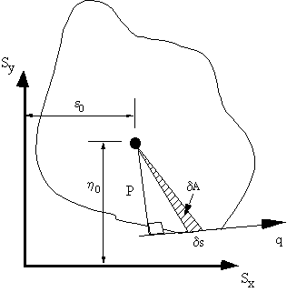 |
Figure 36: Resolving moments due to applied loads and shear flow about a point. |
Take moments about a convenient point inside the beam.
The moment equation will look like this
$$ S_x η_0 - S_y ε_0 = ∮ pq.ds $$but the shear flow term is given as two parts, so substituting for q gives:
$$ S_x η_0 - S_y ε_0 = ∮ pq_b.ds + ∮ pq_{s0}.ds $$The term ∮ s the integral around the cross section.
By looking at the area enclosed by the elemental distance s and the point where moments are taken, then:
$$ δ A = 1/2 p.δs $$Integrating this over the cross section as the element δs→0, gives:
$$ ∮ dA = 1/2 ∮ p ds $$Which means that:
$$ ∮ p.ds = 2A $$where A = Area enclosed by the mid-line of the beam section wall
Giving that:
$$ S_x η_0 - S_y ε_0 = ∮ pq_b.ds + 2pq_{s0}A $$But if we take moments about the points where the shear forces are applied, then this equation becomes:
$$ 0 = ∮ pq_b.ds + 2pq_{s0}A $$which can easily be used to determine the value of qs,0.
TWIST AND WARPING OF SHEAR LOADED CLOSED SECTIONS
If a shear load is not applied at the shear centre, the closed beam section will both twist and have an out of plane axial displacement (warp).
From the definition of shear flow and from elasticity: $$ q_s = τ t \text" , " τ = G γ $$
with the term for shear strain given by $$ γ = {∂w}/{∂s} + {∂v_t}/{∂z} $$ Combining all equations gives: $$ q_s = Gt ({∂w}/{∂s} + {∂v_t}/{∂z}) $$
and substituting for vt gives: $$ {q_s}/{Gt} = {∂w}/{∂s} + p {dθ}/{dz} + {du}/{dz} cos(ψ) + {dv}/{dz} sin(ψ) $$
Integrating this equation around the cross section wrt 's' gives:
$$ {dθ}/{dz} = 1/{2A} ∮ {q_s}/{Gt} .ds $$Which is the rate of twist of the beam wrt z.
If however, the previous equation was integrated wrt 's' from some origin point on the surface of the beam to any other point in the cross section, with the axis origin at the shear centre, it gives:
$$ w_s = w_b + w_0 $$where :
$$ w_b = &int_0^s {q_s}/{Gt}.ds - {A_{0s}}/A ∮ {q_s}/{Gt}.ds $$and
$$ A_{0s} = 1/2 ∫_0^s p.ds = \text" area swept by generator about shear centre" $$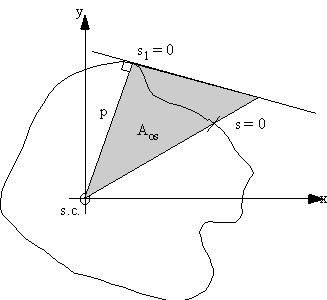 |
Figure 37: Beam section showing area swept by generator. |
This equation gives the axial displacement or warping of the beam. If the cross section was singly or doubly symmetrical, at the axis of symmetry the warping would be zero. If the origin of 's' was taken at any of these points then at s = 0, w0 = 0 and the rest of the warping would be easily found.
For unsymmetrical sections, the unknown warping displacement at s = 0 is given by:
$$ w_0 = { ∮ w_s t.ds }/ { ∮ t.ds } $$However in order to obtain these values, you must first know the position of the shear centre.
SHEAR CENTRE OF CLOSED BEAM SECTIONS
The position of the shear centre for a beam loaded as shown in Figure 38, can be found by using equation :
$$ S_y ε_0 - S_x η_0 = ∮ pq_b.ds + 2 q_{s0} A $$where:
η0 = vertical distance from x-axis to shear centre from reference axis
ε0 = horizontal distance from y-axis to shear centre from reference axis
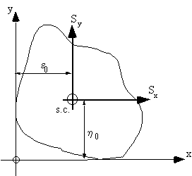 |
Figure 38: Determining location of the shear centre for closed beam section. |
In order to determine the shear centre we need to determine qs,0. From the definition for shear centre, if a shear load is applied here, it produces no twist, so by using previous equation for rate of twist :
$$ 1/{2A} ∮ {q_s}/{Gt}.ds = 0 $$and substituting for qs0 it gives:
$$ 1/{2A} ∮ 1/{Gt}.(q_b + q_{s0}). ds = 0 $$which gives that:
$$ q_{s0} = - { ∮ {q_b}/{Gt} .ds }/ { ∮ 1/{Gt} .ds } $$and if Gt is constant:
$$ q_{s0} = - { ∮ {q_b}.ds }/ { ∮ .ds } $$With these equations the shear flow , shear centre, the rate of twist, and warping in a closed beam section can now be determined.
Example:
Determine shear flow, shear centre and warping in the following closed beam section loaded with a shear force Sy at the s.c.. G is constant .
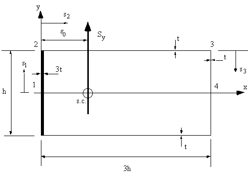 |
Figure 39: Closed section of Example |
1) Determine sectional properties
Since section symmetrical Ixy = 0, and since only loaded vertically , only need Ixx, which is:
$$ I_{xx} = {3th^3}/{12} + {th^3}/{12} + 2 ( {3ht^3}/{12} + (h/2)^2 3th) $$giving:
$$ I_{xx} = {11}/6 th^3 $$Therefore:
$$ S↖{-}_x = 0 \text" , " S↖{-}_y = S_y $$2) Determine Shear Flows
Between 1 and 2, y = s1 and at s1 = 0 , q1 = q0 $$ q_{12} = q_0 - {S_y}/{I_{xx}} ∫_0^s1 3ts_1 .ds_1 $$giving:
$$ q_{12} = q_0 - 9/{11} {S_y}/{h^3} s_1^2 $$between 2 and 3, y = h/2, at s2 = 0, q2 = q0 - 9Sy/44h, giving:
$$ q_{23} = q_0 - 9/{44} {S_y}/h - 3/{11} {S_y}/{h^2} s_2 $$between 3 and 4, y = h/2 - s3, at s3 = 0, q3 = q0 - 45Sy/44h, giving:
$$ q_{34} = q_0 - {48}/{44} {S_y}/h + 3/{11} {s_y}/{h^3} ( h/2 - s_3 )^2 $$ at s3 = h/2, q3 = q0 - 48Sy/44hThe shear flow distribution will look like this:
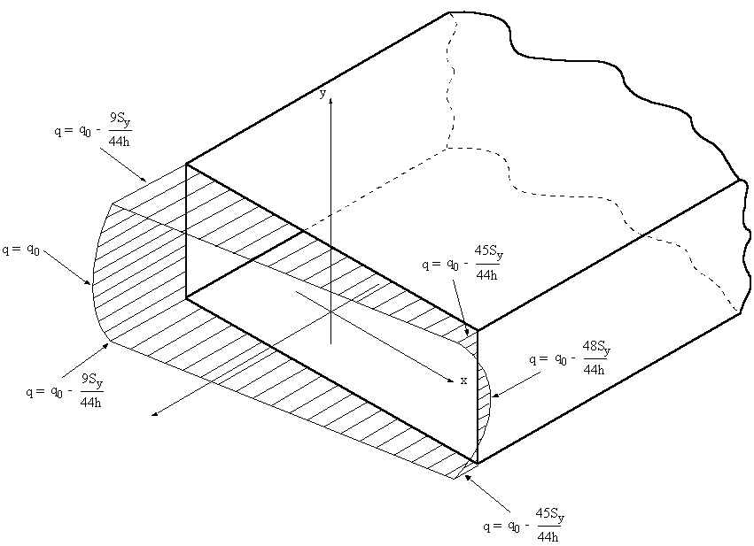 |
Figure 40: Shear flow distribution with constant q0 |
3) Determine q0
Because 't' is not constant, shear flow equation becomes:
$$ q_{s0} = - { ∮ {q_b}/t .ds } / { ∮ 1/t .ds $$where due to symmetry:
$$ ∮ {q_b}/t ds = 2 ( ∫_1^2 {q_{b12}} / {t_{12}}.ds + ∫_2^3 {q_{b23}} / {t_{23}}.ds + ∫_3^4 {q_{b34}} / {t_{34}}.ds) = - {105}/{22} {S_y}/t $$and
$$ ∮ 1/t ds = 2 ( ∫_1^2 1/{t_{12}}.ds + ∫_2^3 1/{t_{23}}.ds + ∫_3^4 1/{t_{34}}.ds) = {22}/3 h/t $$giving that:
$$ q_{s0} = {315}/{484} {S_y}/h $$Substituting this into previous qij equations gives:
$$ q_{12} = {315}/{484} {S_y}/{h} - {9}/{11} {S_y}/{h^3} s_1^2 $$$$ q_{23} = {54}/{121} {S_y}/h - 3/{11} {S_y}/{h^2} s_2 $$
$$ q_{34} = {213}/{484} {S_y}/h + 3/{11} {s_y}/{h^3} ( h/2 - s_3 )^2 $$
Plotting the shear flow distribution, it would look like this:
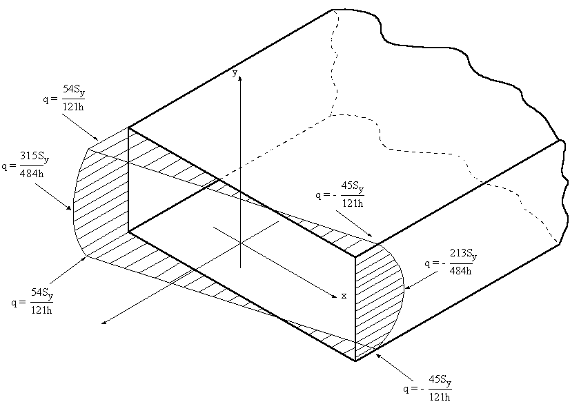 |
Figure 41: Shear flow distribution of closed beam. |
4) Determine Shear Centre
To determine the shear centre you can use full equation or since qs0 was found, use equilibrium. If you use the latter it a lot easier.
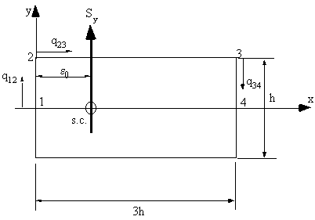 |
Figure 42: Closed beam indicating applied shear force and the direction of the shear flow. |
From definition of applied moments and resultant moments due to internal stresses:
$$ Σ\text"Applied Torque" = Σ\text"Shear Flow Torque Resultant" $$Taking moments about point 1
$$ S_y ε_0 = -2( ∫_0^{3h} q_{23} h/2 .ds_2 + ∫_0^{h/2} q_{34} 3h. ds_3 ) $$First term:
$$ ∫_0^{3h} q_{23} h/2 .ds_2 = h/2 ∫_0^{3h} ( {54}/{121} {S_y}/h - 3/{11} {S_y}/{h^2} s_2) .ds_2 = {27}/{484} S_y h $$Second Term:
$$ ∫_0^{h/2} q_{34} 3 h.ds_3 = 3h ∫_0^{h/2} ( - {213}/{484} {S_y}/h + 3/{11} {S_y}/{h^3}( h/2 - s_3)^2).ds_3 = - {303}/{484} S_y h $$Substituting gives:
$$ ε_0 = {138}/{121}h = 1.14h $$ 5 ) Determine Section WarpingThis is done using equation for ws but first the axis must be moved to the shear centre:
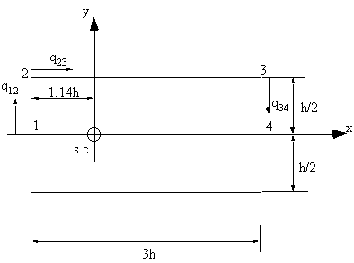 |
Figure 43: Closed beam with axis shifted to shear centre. |
Since our origin is point 1, the at s = 0 , w0 = 0, so equation becomes: $$ w_s = ∫_0^s {q_s}/{Gt}.ds - {A_{0s}}/A ∮ {q_s}/{Gt}.ds $$
But because the load is applied through the shear centre, the right hand term goes to zero, giving that
$$ w_s = ∫_0^s {q_s}/{Gt} .ds $$Between 1 and 2,
$$ w_{12} = 1/{3Gt} ∫_0^{s_1} q_{12}.ds_1 = 1/{3Gt} ∫_0^{s_1} ({315}/{484} {S_y}/h - 9/{11} {S_y}/{h^3}s_1^2).ds_1 = ({105}/{484}{S_y}/h - 1/{11} {s_1^3}/{h^3}) {S_y}/{Gt} $$At point 2,
$$ w_2 = {47}/{484} {S_y}/{Gt} $$and between 2 and 3,
$$ w_{23} = w_2 + 1/{Gt} ∫_0^{s_2} q_{23}.ds_2 = 1/{Gt} ∫_0^{s_2}({54}/{121} {S_y}/h - 3/{11} {S_y}/{h^2} s_2).ds_2 = ({47}/{484}- {54}/{121} {s_2}/h - 3/{22} {s_2^2}/{h^2} ) {S_y}/{Gt} $$at point 3,
$$ w_3 = {101}/{404} {S_y}/{Gt} $$and between 3 and 4
$$ w_{34} = w_3 + 1/{Gt} ∫_0^{s_3} q_{34}.ds_3 = 1/{Gt} ∫_0^{s_3} - {213}/{484} {S_y}/h + 3/{11} {S_y}/{h^3}( h/2 - s_3)^2).ds_3 = ({213}/{968} - {213}/{484} {S_3}/h - 1/{11h^3}(h/2 - s_3)^3){S_y}/{Gt} $$Because the section is symmetrical about the x-axis, the warping distribution is equal in magnitude but opposite in direction. If this is plotted, it looks like this:
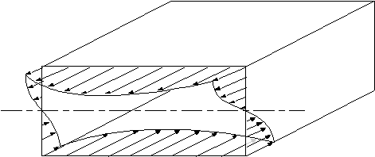 |
Figure 44: Diagram showing the warping distribution on the closed beam. |